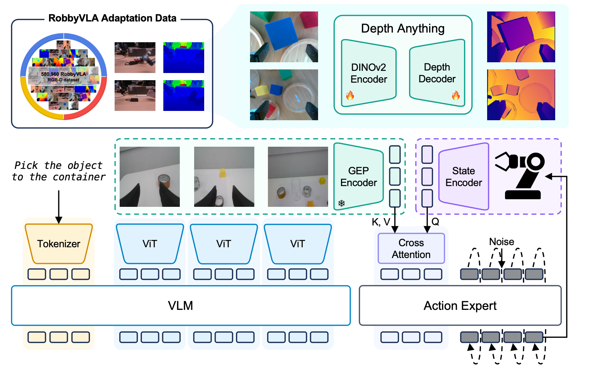
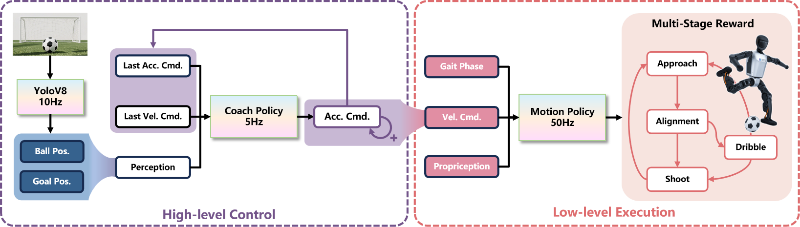
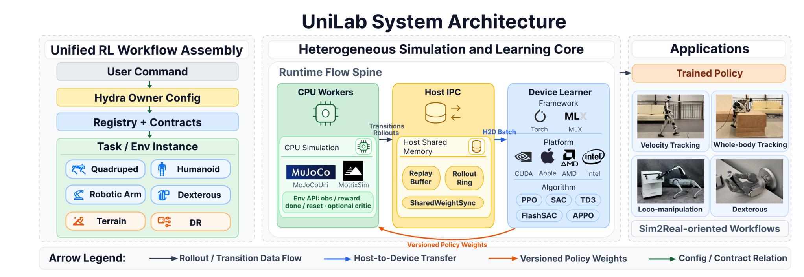
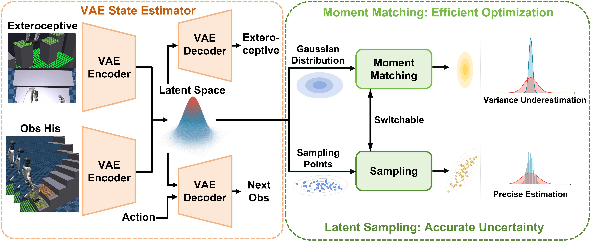
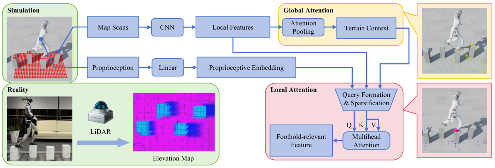
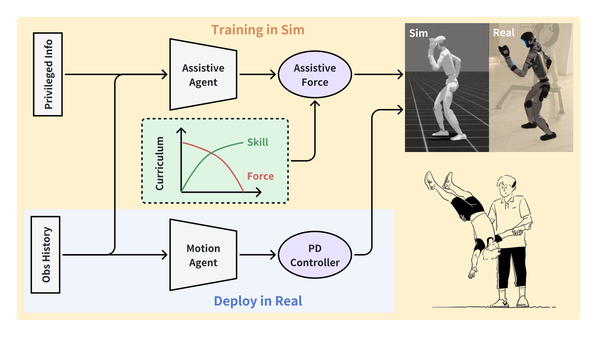
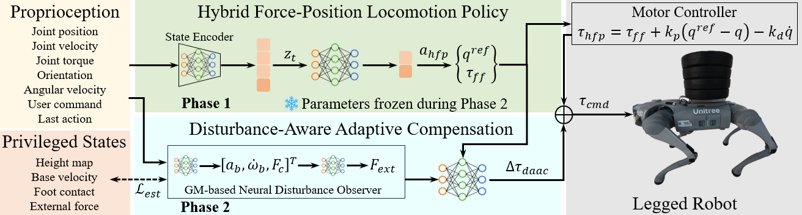

{kind=link}

GeoAlignBeyond Semantics with State-Guided Spatial Alignment in VLA Models
Robot-state-guided spatial alignment brings geometry into VLA policies for precise manipulation.
ROBOT LEARNING & EMBODIED INTELLIGENCE
Ph.D. Student · Tongji University
Shanghai Innovation Institute
I study how robots understand the world
and turn that understanding into action.
My research spans geometry-aware vision-language-action models, humanoid locomotion, and reinforcement learning, with a focus on reliable behavior on real robots.
RESEARCH

Robot-state-guided spatial alignment brings geometry into VLA policies for precise manipulation.

Visual decision-making and reusable motion skills connect approaching, aligning, dribbling, and kicking.

Decoupling CPU simulation and GPU learning to build an efficient, cross-platform training system.

Distribution-aware optimization for more stable policy learning with stochastic latent representations.

Separating global terrain context and state-conditioned foothold attention for perceptive locomotion.

Adaptive assistance guides motion learning and gradually gives way to independent robot skills.

Combining position and torque control with disturbance estimation for resilient legged locomotion.
Motion generation and staged policy learning balance kicking accuracy, motion similarity, and stability.
HANDS-ON RESEARCH
PERCEPTION & CONTROL
I led a four-person team working on wheel-legged control, state estimation, depth-camera perception, LiDAR elevation maps, and terrain fusion.
REAL-WORLD EVALUATION
Motion-control validation, task evaluation, and failure localization across Unitree B2W, Go2, Go2W, G1, Honor wheel-legged robots, and ALOHA.
CONTACT
For conversations about robot learning
and embodied intelligence.
Tongji University · Shanghai Innovation Institute
{kind=link}
{kind=link}
{kind=link}
{kind=link}
{kind=link}
{kind=link}